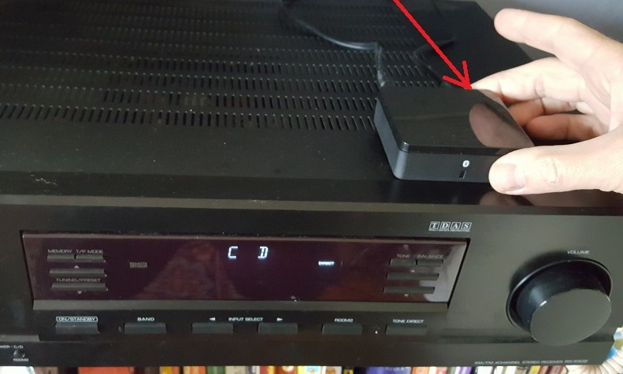

<header>
    <title>1209 Glen living room bluetooth</title>
</header>
<body bgcolor=#cccccc><font face=arial size=+3>
<h4>1209 Glen living room bluetooth</h4>
To control the stereo using your phone:
<ul>
    <li>Repeatedly press the "INPUT SELECT" button on the face of the stereo until you have chosen "CD" (not "DVD" as highlighted below):
    <br><br>
    </li>
    <li>Put the bluetooth receiver into pairing mode by pressing the button <b>behind</b> the device for a full second or so
    <br><br>
    </li>
    <li>If you held the button down long enough, the blue light on the bluetooth receiver should begin blinking very rapidly</li>
    <li>On your device, scan for bluetooth devices
    <br><br>
</li>
<li>Select Amazon_Audio to connect
    <br><br>
</li>
<li>Enjoy</li>
</ul>

<hr>
    <a href=pix/index.html>Pictures</a>
    <p>
contact Nelson:<br>
<a href='mailto:nelson.sproul@gmail.com'>nelson.sproul@gmail.com</a><br>
<a href='tel:2096777685'>(209)677-7685</a><br>
<hr>
contact Deirdre:<br>
<a href='mailto:dvsproul@gmail.com'>dvsproul@gmail.com</a><br>
<a href='tel:4153706422'>(415)370-6422</a><br>
<hr>
from the City of Berkeley:<br>
<a href='https://www.cityofberkeley.info/uploadedFiles/Planning_and_Development/Level_3_-_Land_Use_Division/ShortTermRentalGuestRequirements.pdf'>short-term rental guest requirements</a><br>
<hr>
<a href='index.html'>Home</a>
